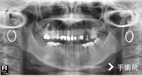

埋伏齒拔除
此為埋伏齒手術前後對照照片，照片的左邊其實是病人的右邊。從照片上可以看到左右下牙床智齒成水平狀態，屬於難度高的手術，需開刀拔除。
埋伏齒疼痛度高於其它牙齒問題，有時會造成牙齦會腫，面頰會腫，嘴巴無法張開等問題，一般而言，矯正醫師會在矯正前要求病人拔除埋伏齒，使矯正治療順利進行。
原本矯正好或是原本就很好的齒列，會因為埋伏齒生長，使齒列改變為不齊，影響美觀。大部分病患罹患埋伏齒疼痛，診所醫生都轉診大醫院，原因是：診所設備不足，拔除困難，手術時間長，術後易流血和感染，醫生相對承受風險大。
但轉診的大醫院往往安排數星期才能拔，無法即時解決問題。亞德擁有一流的設備及完善儀器，安排後即可拔牙。免除病人舟車勞頓之苦，且可在術後得到良好的照護。
植牙+假牙同天執行
客戶因牙齒自然汰換，有植牙及假牙需求，舊牙因功能毀壞無法使用，故與亞德醫師約定時間，於同日植牙後，醫師再協助其製作一個臨時假牙，以利其後續正常進食及治療，有效維持生活品質。
上顎竇增高植牙手術

我們知道，一顆牙齒要屹立不搖，四周要有足夠的齒槽骨去支撐它；同理，「人工植體」也需要足夠的齒槽骨才能在植入後有良好的穩定度。
患者左上第一大臼齒缺牙，齒槽骨高度只剩下3公釐高度，但植牙需要至少10公釐高度的齒槽骨才能建造穩固的植體。
這種狀況下，可依患者狀況評估以「上顎竇增高術」，利用手術器械將「上顎竇膜」分離並提高，並填入骨粉，增加骨頭高度。因為竇膜易破，如傷到破損可能造成的併發症包括：上顎竇膜破裂、鼻竇炎、口腔與鼻竇相通、骨粉或植體感染，因此「上顎竇增高術」屬於較複雜的手術技巧，建議選擇臨床經驗豐富的醫師來操作較為適當。
手術後照片可以明顯看出齒槽骨高度已經增加，確定有足夠骨頭再植入一個植體，也順利替患者解決缺牙所帶來的不便。
磁吸式全口活動假牙
傳統的全口假牙因為無法有效的固定在牙床上，容易有鬆動的狀況，增添進食的痛苦，若裝戴不當可能導致周邊組織受損。雖然可以用假牙黏著劑來改善這狀況，但是它的穩固性不夠，持久性太短，使得其實用性大打折扣，如果有使用不當的狀況，更可能出現牙齦發炎、感染的狀況。
現在已發展出「磁吸式活動假牙」，可利用病患口中仍穩固的牙根，裝上含有磁石的金屬牙冠，並在活動假牙的基座也裝設了相對應的磁吸裝置，使假牙能穩固的貼附在牙床上。磁吸式假牙可省去金屬勾座，較傳統式活動假牙來得美觀，且容易取下清潔，可避免不當的受力，使用壽命也比較長，對一些缺牙較多，但是不想或不能植牙的患者算是一大福音。